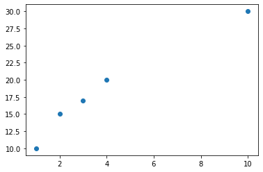
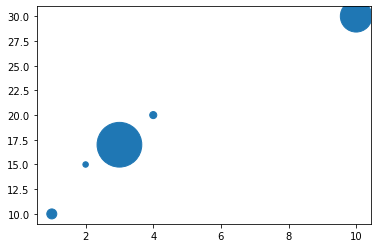
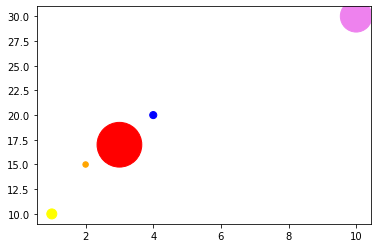
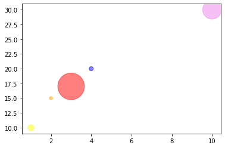
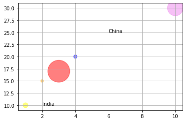
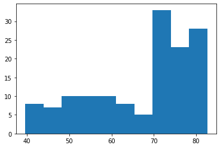
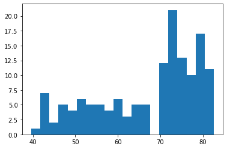

Basics of plotting
import numpy as np
Line plot
x = [1, 2, 3, 4,10]
y = [10, 15, 17, 20,30]
plt.plot(x,y)
plt.xlabel('x-label')
plt.ylabel('y-label')
plt.title('My Title')
plt.yticks([0,5,10,15,20,25,30,40],
['zero', 'five', 'ten', 'fifteen', 'twenty', 'twenty five', 'thirty', 'fourty'])
plt.show()
---------------------------------------------------------------------------
NameError Traceback (most recent call last)
<ipython-input-2-cb2c01bc2d6f> in <module>
1 x = [1, 2, 3, 4,10]
2 y = [10, 15, 17, 20,30]
----> 3 plt.plot(x,y)
4
5 plt.xlabel('x-label')
NameError: name 'plt' is not defined
Scatter plot
plt.clf()
plt.scatter(x,y)
plt.show()

Change size of bullets
plt.clf()
size = [100,30,2000,50,1000]
plt.scatter(x,y,s=size)
<matplotlib.collections.PathCollection at 0x111e8f160>

Add colours
plt.clf()
col = ['yellow', 'orange', 'red', 'blue', 'violet']
plt.scatter(x,y,s=size,c=col)
<matplotlib.collections.PathCollection at 0x1120e2128>

make transparent
plt.clf()
col = ['yellow', 'orange', 'red', 'blue', 'violet']
plt.scatter(x,y,s=size,c=col, alpha=0.5)
<matplotlib.collections.PathCollection at 0x11944c588>

Add text and grid
plt.clf()
col = ['yellow', 'orange', 'red', 'blue', 'violet']
plt.scatter(x,y,s=size,c=col, alpha=0.5)
# Additional customizations
plt.text(2, 10, 'India')
plt.text(6, 25, 'China')
# Add grid() call
plt.grid(True)
plt.show()

Histogram
type help(plt.hist) for help
life_exp = [43.828, 76.423, 72.301, 42.731, 75.32, 81.235, 79.829, 75.635, 64.062, 79.441, 56.728, 65.554, 74.852, 50.728, 72.39, 73.005, 52.295, 49.58, 59.723, 50.43, 80.653, 44.74100000000001, 50.651, 78.553, 72.961, 72.889, 65.152, 46.462, 55.322, 78.782, 48.328, 75.748, 78.273, 76.486, 78.332, 54.791, 72.235, 74.994, 71.33800000000002, 71.878, 51.57899999999999, 58.04, 52.947, 79.313, 80.657, 56.735, 59.448, 79.406, 60.022, 79.483, 70.259, 56.007, 46.38800000000001, 60.916, 70.19800000000001, 82.208, 73.33800000000002, 81.757, 64.69800000000001, 70.65, 70.964, 59.545, 78.885, 80.745, 80.546, 72.567, 82.603, 72.535, 54.11, 67.297, 78.623, 77.58800000000002, 71.993, 42.592, 45.678, 73.952, 59.44300000000001, 48.303, 74.241, 54.467, 64.164, 72.801, 76.195, 66.803, 74.543, 71.164, 42.082, 62.069, 52.90600000000001, 63.785, 79.762, 80.204, 72.899, 56.867, 46.859, 80.196, 75.64, 65.483, 75.53699999999998, 71.752, 71.421, 71.688, 75.563, 78.098, 78.74600000000002, 76.442, 72.476, 46.242, 65.528, 72.777, 63.062, 74.002, 42.56800000000001, 79.972, 74.663, 77.926, 48.159, 49.339, 80.941, 72.396, 58.556, 39.613, 80.884, 81.70100000000002, 74.143, 78.4, 52.517, 70.616, 58.42, 69.819, 73.923, 71.777, 51.542, 79.425, 78.242, 76.384, 73.747, 74.249, 73.422, 62.698, 42.38399999999999, 43.487]
plt.hist(life_exp, 10)
plt.show()

plt.clf() # Clear the current figure.
<Figure size 432x288 with 0 Axes>
plt.hist(life_exp, bins=20)
plt.show()
